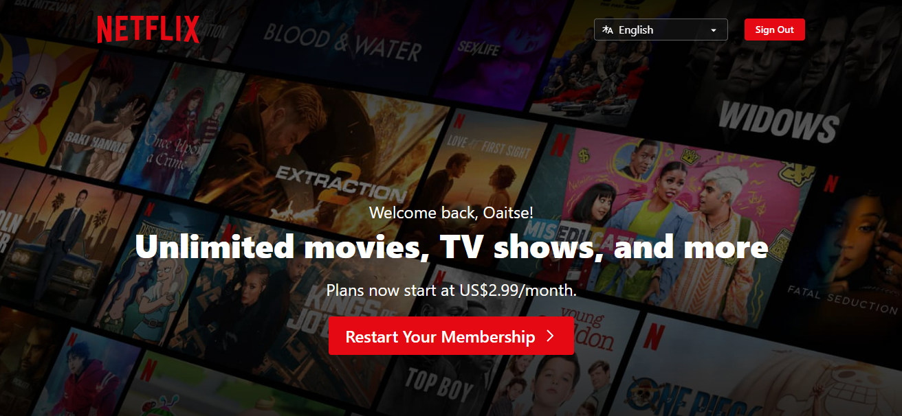

Visual Hierarchy
Netflix
Netflix.com In Visual Hierarchy, elements in a web page are displayed according to their importance. Meaning that the elements that need to be viewed or read first should be displayed in such a way that the user is able to pick it when visiting the web page. In the example of Netflix, we see that the developer applied size as to ensure that the important message is bigger than the rest of other elements. The wording, ‘Unlimited movies, TV shows, and more’ have been made bigger than the rest of the texts to ensure that it is visible to the user to notice it first. The user need to know that there is unlimited movies and TV shows, and there is more to find in Netflix. From there now the user can look at other elements like subscription. Thus we see, the main message the user of the website has been made clear to the user before they can go to other information.
Proximity
The Church Of Jesus Christ of Latter-Day Saints
Churchofjesuschrist.orgIn this example we see a demonstration of the principle of proximity. Items that are related are place together so that the user can find them close to each. For example, we see the links titles My Links displayed together in a line. This make it easy for the user to scroll through them to get the desired link to visit. Through the entire web page, we see groups of content put together, for example, Newsroom and Inspiration. This are group of content that are related and are put together in one section of the webpage so that it is easy to get them.
Hick's law
Dropbox
Website URLHere, a customer is provided with four options to upgrade their account with Dropbox. The website uses the Hick’s law, by giving the customer more possible choices to select from. The law states that, increased number of choices helps the customer or user to take less time to make a decision than when the options are few. Because the user is provide with plenty of options to choose from, it because easy for the customer to browse through the choices and select the one to do. Thus after choosing the one item, then the customer can want to know more of the choice she or he made. It is a good design principle because, it helps customer not to waste time between making a choice.